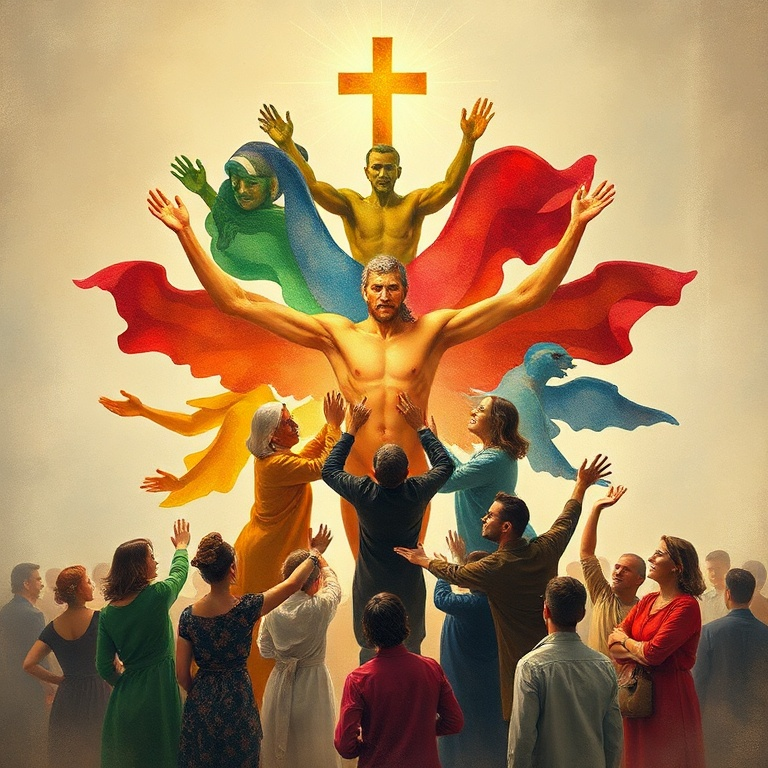

Introdução
Efésios é uma das epístolas mais sublimes de Paulo, escrita por volta de 60-62 d.C. durante seu cativeiro em Roma. A carta apresenta as riquezas insondáveis da graça de Deus em Cristo, revela o mistério da unidade entre judeus e gentios na igreja, e chama os crentes a viverem de modo digno de sua vocação. Efésios nos leva das alturas da eleição eterna à realidade prática do combate espiritual diário.
1) Bênçãos Espirituais em Cristo
1) Bênçãos Espirituais em Cristo
Paulo abre Efésios com uma doxologia que celebra as bênçãos espirituais nas regiões celestiais em Cristo. Antes da fundação do mundo, Deus nos escolheu nele para sermos santos e irrepreensíveis diante dele. A eleição não é baseada em mérito humano, mas no amor e no propósito soberano de Deus. Em Cristo temos redenção pelo seu sangue, o perdão dos pecados segundo as riquezas da sua graça. Deus nos fez conhecer o mistério da sua vontade — o plano de reunir em Cristo todas as coisas, tanto as do céu quanto as da terra. Nós fomos feitos herança em Cristo, segundo o propósito daquele que opera todas as coisas conforme o conselho da sua vontade. Paulo ora para que os efésios recebam espírito de sabedoria e revelação no pleno conhecimento de Deus. Ele deseja que os olhos do coração sejam iluminados para conhecer a esperança do chamado, as riquezas da glória da herança nos santos e a suprema grandeza do poder de Deus para conosco. Este poder ressuscitou a Cristo dos mortos e o fez sentar à direita de Deus, acima de todo principado, potestade e domínio. Deus sujeitou todas as coisas sob seus pés e o constituiu cabeça sobre todas as coisas para a igreja, que é o seu corpo, a plenitude daquele que enche tudo em todos.
2) Pela Graça Sois Salvos
2) Pela Graça Sois Salvos
Paulo contrasta o passado de morte espiritual com o presente de vida em Cristo. Antes, estávamos mortos em ofensas e pecados, andando segundo o curso deste mundo, segundo o príncipe das potestades do ar, vivendo nos desejos da carne. Éramos por natureza filhos da ira, como os demais. Mas Deus, sendo rico em misericórdia e pelo grande amor com que nos amou, estando nós mortos em pecados, nos vivificou juntamente com Cristo. Pela graça sois salvos! Não apenas nos vivificou, mas nos ressuscitou e nos fez assentar nos lugares celestiais em Cristo Jesus. A declaração mais célebre da carta está em Efésios 2.8-9: "Porque pela graça sois salvos, mediante a fé; e isto não vem de vós, é dom de Deus; não vem das obras, para que ninguém se glorie." A salvação é inteiramente obra de Deus, desde a eleição até a glorificação. Cristo é a nossa paz. Ele derrubou a parede de separação entre judeus e gentios, abolindo a lei dos mandamentos na forma de ordenanças, para criar em si mesmo dos dois um novo homem, fazendo a paz. Por meio dele, ambos temos acesso ao Pai em um mesmo Espírito. Já não somos estrangeiros nem forasteiros, mas concidadãos dos santos e membros da família de Deus.
3) O Mistério Revelado
3) O Mistério Revelado
Paulo revela o mistério que lhe foi dado conhecer: os gentios são coerdeiros, membros do mesmo corpo e coparticipantes da promessa em Cristo Jesus por meio do evangelho. Este mistério estava oculto em Deus desde séculos passados, mas agora foi revelado aos santos apóstolos e profetas pelo Espírito. Paulo se descreve como ministro deste evangelho pela graça que lhe foi dada. A ele, o menor de todos os santos, foi concedida a graça de pregar entre os gentios as riquezas insondáveis de Cristo e de iluminar a todos quanto à dispensação do mistério que esteve oculto em Deus. O propósito eterno de Deus se cumpre na igreja: para que a multiforme sabedoria de Deus seja agora notificada aos principados e potestades nos lugares celestiais. A igreja não é um acidente na história — é o veículo escolhido por Deus para manifestar sua sabedoria ao universo. Paulo ora novamente, pedindo que os efésios sejam fortalecidos com poder pelo Espírito no homem interior, que Cristo habite pela fé em seus corações, que eles possam compreender a largura, comprimento, altura e profundidade do amor de Cristo, que excede todo entendimento. A Deus seja glória na igreja por todas as gerações.
4) Unidade do Corpo

4) Unidade do Corpo
Paulo exorta os crentes a andar de modo digno da vocação com que foram chamados, com toda humildade, mansidão, longanimidade, suportando-vos uns aos outros em amor, esforçando-se por manter a unidade do Espírito no vínculo da paz. Há um só corpo, um só Espírito, uma só esperança, um só Senhor, uma só fé, um só batismo, um só Deus e Pai de todos. Cristo deu dons aos homens: apóstolos, profetas, evangelistas, pastores e mestres, para o aperfeiçoamento dos santos, para a obra do ministério e para a edificação do corpo de Cristo. O objetivo é que todos cheguemos à unidade da fé e do pleno conhecimento do Filho de Deus, ao varão perfeito, à medida da estatura da plenitude de Cristo. A unidade não significa uniformidade. Cada membro do corpo tem função específica, e quando cada parte opera corretamente, o corpo cresce e se edifica em amor. A verdade em amor é o princípio do crescimento saudável. Devemos falar a verdade em amor, crescendo em tudo naquele que é a cabeça, Cristo. Paulo exorta à renovação da mente: despojar-se do velho homem, que se corrompe segundo os desejos do engano, e revestir-se do novo homem, criado segundo Deus em justiça e retidão verdadeiras. A vida cristã é um processo contínuo de transformação, capacitado pelo Espírito Santo.
5) Armadura de Deus
5) Armadura de Deus
Paulo conclui Efésios com o chamado ao combate espiritual. Nossa luta não é contra carne e sangue, mas contra os principados, potestades e forças espirituais da maldade nas regiões celestiais. O crente não está em uma guerra física, mas espiritual. Por isso, é necessário vestir toda a armadura de Deus. A armadura inclui: o cinto da verdade, a couraça da justiça, os sapatos da preparação do evangelho da paz, o escudo da fé, o capacete da salvação e a espada do Espírito, que é a palavra de Deus. Cada peça é essencial para resistir nos dias maus e permanecer firme. A oração no Espírito é o elemento que une toda a armadura. Os relacionamentos na família são abordados com a beleza do evangelho. Esposas, sejam submissas ao próprio marido como ao Senhor. Maridos, amai vossas mulheres como Cristo amou a igreja e se entregou por ela. Filhos, obedecei a vossos pais. Pais, não provoqueis vossos filhos à ira. Servos, servi de boa vontade como ao Senhor. A carta termina com saudações e a bênção: "Paz seja com os irmãos, e amor com fé, da parte de Deus Pai e do Senhor Jesus Cristo. A graça seja com todos os que amam a nosso Senhor Jesus Cristo com amor incorruptível." Efésios nos lembra que somos parte de algo muito maior — o eterno propósito de Deus em Cristo.
Conclusão
Efésios revela as riquezas insondáveis da graça de Deus. Da eleição eterna à armadura espiritual, Paulo nos conduz pelas alturas da teologia e pelas profundezas da vida prática. Somos salvos pela graça, unidos em Cristo, edificados como corpo e equipados para a batalha espiritual. Que possamos viver à altura da nossa vocação, firmados na verdade, revestidos de toda a armadura de Deus.